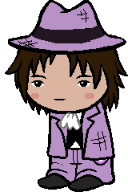
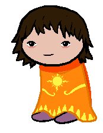

Meet the dungeon crashers!
While I'm certain that there are those outside of this group that might also crash dungeons like we do, these are the ones that I know personally that work together to a degree from time to time.
Name:
Aeons Edgeworth

Title:Prince of Time
Occupation(s):Detective, Mayor's assistant, investigative reporter,
pokemon snack stand owner, webmaster
Chumhandle:pokemon snack stand owner, webmaster
shinyJiggly
Pronouns:They/Them
Age:somewhere between 20, 28, and 34
(time stuff and multiple selves stuff is weird)
Height:(time stuff and multiple selves stuff is weird)
5'3"
Session of origin:SBARGv2
Bio:
Generally known for being relatively level-headed and very knowledgeable about weird time stuff. Their method of choice for avoiding doomed timelines is to try and use common sense to prevent disasters from occurring in the first place. Aeons is also known for pioneering the anchor timehop technique, an advanced tech that allows one to travel through space by traveling through time relative to a moving object. They always try to do time stuff with percision and generally do not like the class they were given, as they do not like destroying things, let alone something as valuable as time. Aeons has changed their name a number of times since transitioning nonbinaryways. Not actually related to any known prosecutors of the same surname, they just admire a certain one's style a little too much. Made this website.
Name:
Nick Card

Title:Mage of Light
Occupation(s):Newsletter journalist
Chumhandle:lavenderSiren
Pronouns:They/Them
Age:27
Height:5'3"
Session of origin:SBARGv1
Bio:
The somewhat more neurotic and anxious sibling of Aeons, Nick has some issues sometimes, possibly stemming from their past residency on a meteor in the furthest ring for a few years. They spend their free time working on video games (which tend to come true via light bullshit) and their ongoing webcomic. Nick is incredibly powerful, boasting a devastating solar beam attack, but rarely has an occasion to use such power. They also have many ways to travel to places, including to other dimensions, thanks to the many artifacts they've received over the past year or two.